Shirataka
Shirataka · Yamagata
Shirataka
Highlighted on the Yamagata map.
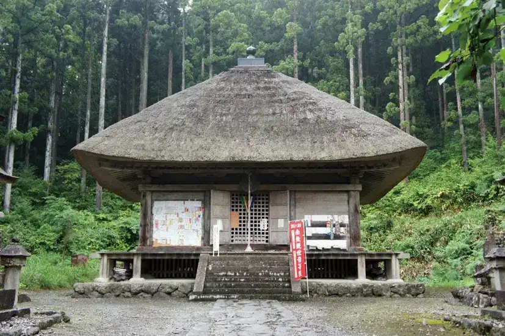
Stay
鷹野湯温泉 パレス松風
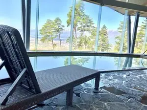
Takano Yuon Izumi Paresu Matsukaze
Onsen lodging in Shirataka, Yamagata.
Dining
千利庵
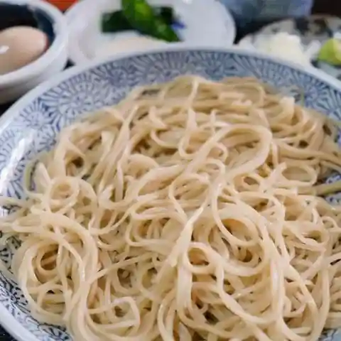
Sen Ri Iori
Soba restaurant in Shirataka, Yamagata.
あゆ茶屋
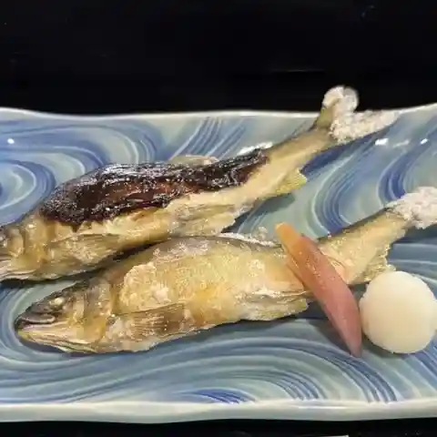
Ayu Chaya
Seafood restaurant in Shirataka, Yamagata.
そばきり八寸
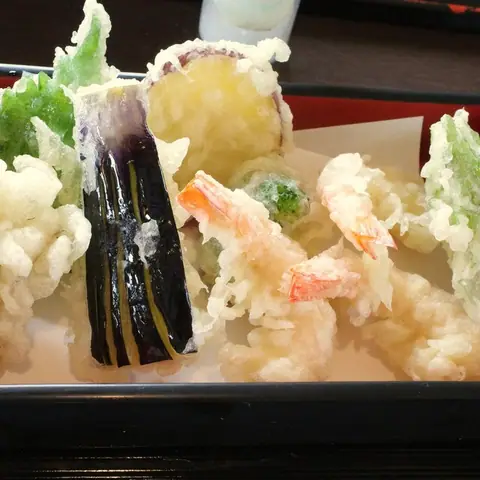
Sobakiri Hachi Sun
Soba restaurant in Shirataka, Yamagata.
やまり菓子舗
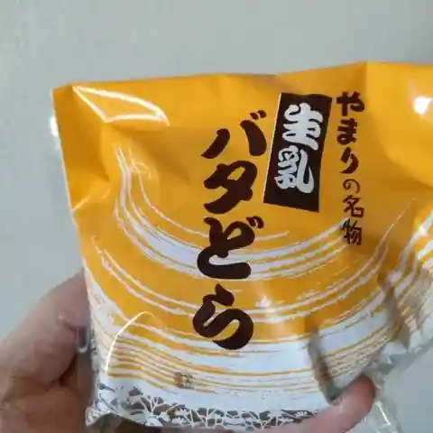
Yamari Kashi Ho
Japanese sweets shop in Shirataka, Yamagata.
熊屋
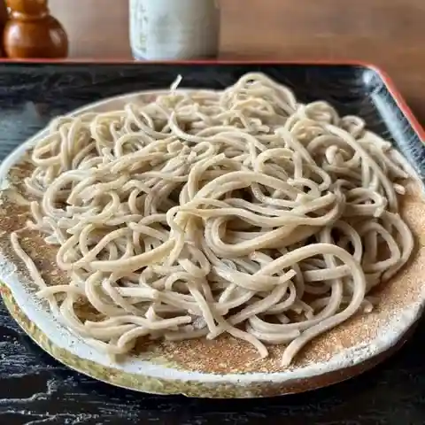
Kuma Ya
Soba restaurant in Shirataka, Yamagata.
十割そば 紅五郎
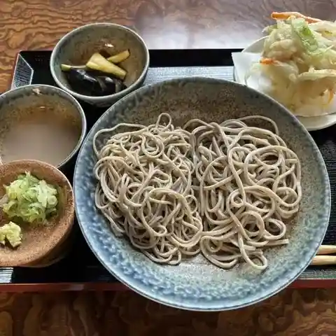
Juu Wari Soba Kurenai Gorou
Soba restaurant in Shirataka, Yamagata.
あんちん堂
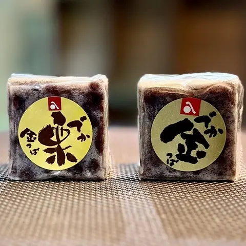
Anchin Dou
Japanese sweets shop in Shirataka, Yamagata.
金ちゃんラーメン 白鷹店
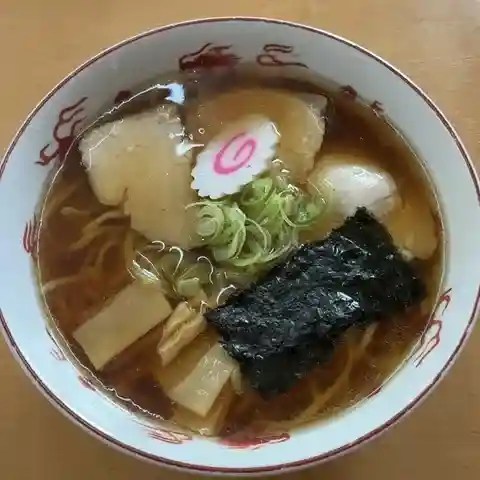
Kin Chan Raamen Shirataka Mise
Ramen shop in Shirataka, Yamagata.
イタリア料理 シャッタカ
Itaria Ryouri Shattaka
Italian restaurant in Shirataka, Yamagata.
エリート思酵♡
Eriito Omoi Kou ♡
Bakery in Shirataka, Yamagata.
白鷹そば あやせや
Shirataka Soba Ayaseya
Soba restaurant in Shirataka, Yamagata.
喜多楼
Kita Rou
Chinese restaurant in Shirataka, Yamagata.
まつのや
Matsunoya
Shokudo diner in Shirataka, Yamagata.
中国菜苑 真櫻
Chuugoku Na En Makoto Sakura
Chinese restaurant in Shirataka, Yamagata.
蔵
Kura
Chinese restaurant in Shirataka, Yamagata.
和菓子ぬまざわ
Wagashi Numazawa
Japanese sweets shop in Shirataka, Yamagata.
和食処松風
Washoku Tokoro Matsukaze
Noodle shop in Shirataka, Yamagata.
パレス松風
Paresu Matsukaze
Inn restaurant in Shirataka, Yamagata.
四ツ葉
Shi Tsu Ha
Chinese restaurant in Shirataka, Yamagata.
広東
Kanton
Ramen shop in Shirataka, Yamagata.
白鷹 源内邸
Shirataka Gennai Tei
French restaurant in Shirataka, Yamagata.
手打そば 舟越
Teuchi Soba Funakoshi
Soba restaurant in Shirataka, Yamagata.
割烹ひさご
Kappou Hisago
Japanese restaurant in Shirataka, Yamagata.
Sights
Michi-no-Eki Shirataka Yana Park
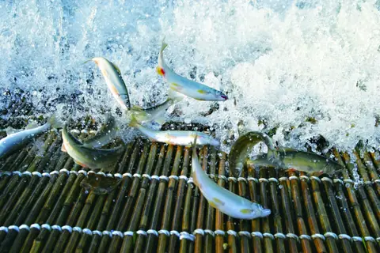
A roadside station with a traditional fish weir on the Mogami River, popular for salt-grilled sweetfish and other ayu dishes; the Shirataka Ayu Festival is held in autumn.
Zuiryuinn
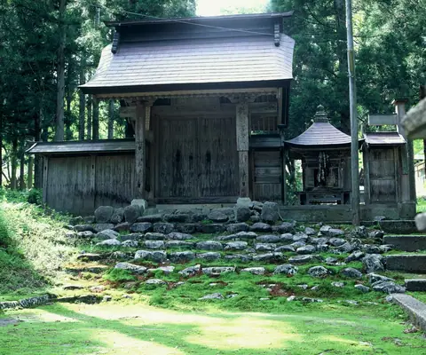
Inariyama Zuiryuinn was founded in 1453 by a Zen master. There is a waterfall about 2km into the mountain in the back of the temple, and it is said that the waterfall was named "Ryumon no Taki